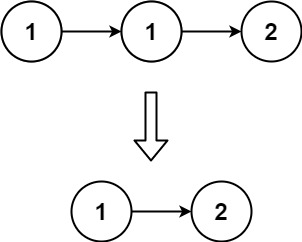
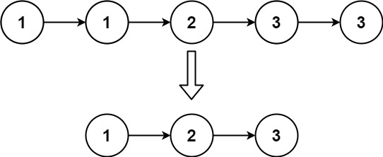

books / company-solutions / Linked List
83. 删除排序链表中的重复元素
| 题目信息 | 内容 |
|---|---|
| 难度 | 简单 |
| 核心模式 | 单指针扫描原地去重（保留一个） |
| 时间复杂度 | O(n) |
| 空间复杂度 | O(1) |
题目与约束
给定一个已排序的链表的头 head ， 删除所有重复的元素，使每个元素只出现一次 。返回 已排序的链表 。
示例 1：

输入：head = [1,1,2]
输出：[1,2]
示例 2：

输入：head = [1,1,2,3,3]
输出：[1,2,3]
提示：
-
链表中节点数目在范围
[0, 300]内 -
-100 <= Node.val <= 100 -
题目数据保证链表已经按升序 排列
核心不变量
由于链表已排序，重复元素必然相邻；指针
cur之前的链表部分永远已是"去重完毕"的结果，cur只需比较自身与next：相等就删掉next，不等才前进。
完整推导
思路推导
- 直觉与痛点（要不要额外空间？）
最直觉的做法是遍历一遍、把出现过的值放进哈希表，再重建链表，但这要 O(n) 额外空间。题目只要求"每值保留一个"，而链表已排序，相同值一定挨在一起，因此完全可以在原链表上就地删除，做到 O(1) 空间。
- 破局思路（一个指针，比较相邻两点）
用 cur 从头扫描：
- 若
cur.val == cur.next.val：说明cur.next是多余副本，直接cur.next = cur.next.next跳过它，cur原地不动（因为新的cur.next可能还是同值）。 - 若
cur.val != cur.next.val：这一段已经唯一，cur = cur.next向前推进。
以 [1,1,2] 为例：cur 在第一个 1，发现 1==1，删除第二个 1；此时 cur.next 变成 2，不相等，前进到 2，结束，得到 [1,2]。
- 关键追问（删除后为什么不移动
cur？）
因为可能连着三个甚至更多相同值（如 [1,1,1]）。删掉一个后新的 cur.next 仍是同值，必须在同一位置反复比较，直到后继不同才能前进——所以删除分支里不推进 cur。
- 收尾
返回 head。整条链表是原地修改的，头节点永远不会被删（第一个出现的值总要保留一个）。
Java 实现（单指针原地去重）
/**
* Definition for singly-linked list.
* public class ListNode {
* int val;
* ListNode next;
* ListNode() {}
* ListNode(int val) { this.val = val; }
* ListNode(int val, ListNode next) { this.val = val; this.next = next; }
* }
*/
class Solution {
public ListNode deleteDuplicates(ListNode head) {
ListNode cur = head;
// 注意 cur.next 可能为 null，循环条件要同时判空
while (cur != null && cur.next != null) {
if (cur.val == cur.next.val) {
// 删除多余副本，cur 不移动，继续和新后继比较
cur.next = cur.next.next;
} else {
// 当前值已唯一，前进
cur = cur.next;
}
}
return head;
}
}
复杂度
- 时间：
O(n)。cur沿链表最多前进n步，每次删除只是改一次指针，整体线性。 - 空间：
O(1)。只用一个cur指针原地修改，不申请额外容器。
易错点与扩展（面试高频考点）
- 删除后错误地推进
cur：连续多个相同值时会漏删，删除分支必须保持cur不动。 - 循环条件只写
cur != null：访问cur.next会空指针，必须写成cur != null && cur.next != null。 - 空链表/单节点：
head == null或只有一个节点时循环不进入，直接返回head，无需特判。 - 与第 82 题混淆：本题"重复值保留一个"，单指针即可；第 82 题"重复值一个都不留"，必须用哑结点 + 前驱整段删除。这是最常见的连环追问。
- 扩展：若要求"每个值最多保留两个"，可改用快慢指针，判据变为
cur.val != slow.val（参考第 80 题思路），本质仍是利用"有序即相邻"的性质。
力扣原题
C++ 实现
/**
* Definition for singly-linked list.
* struct ListNode {
* int val;
* ListNode *next;
* ListNode() : val(0), next(nullptr) {}
* ListNode(int x) : val(x), next(nullptr) {}
* ListNode(int x, ListNode *next) : val(x), next(next) {}
* };
*/
class Solution {
public:
ListNode* deleteDuplicates(ListNode* head) {
ListNode* cur = head;
while (cur != nullptr && cur->next != nullptr) {
if (cur->val == cur->next->val) {
// 删除多余副本，cur 不移动
cur->next = cur->next->next;
} else {
cur = cur->next;
}
}
return head;
}
};
Python 实现
# Definition for singly-linked list.
# class ListNode:
# def __init__(self, val=0, next=None):
# self.val = val
# self.next = next
class Solution:
def deleteDuplicates(self, head: ListNode | None) -> ListNode | None:
cur = head
while cur and cur.next:
if cur.val == cur.next.val:
# 删除多余副本，cur 不移动
cur.next = cur.next.next
else:
cur = cur.next
return head